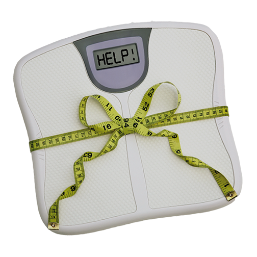

නිරෝගී සෞඛ්ය සම්පන්න ජිවිතයකට අවශ්ය ප්රතිපත්ති
ඌණපෝෂිත භාවය සහ අධිපෝෂිත භාවය සම්බන්ධ රෝග තත්ත්ව දෙකම කෙරෙහි අපගේ දෛනික ආහාර පුරුදු බලපායී.
දුප්පත්කම හා නොදැණුවත්කම හේතු කොට ගෙන ආහාර වේලක ප්රමාණය හා ගුණාත්මකභාවය නොසලකා හැරිම ඌණපෝෂිත
භාවයට ප්රධානතම සාධකයක් වී ඇත. ආහාර හා සම්බන්ධ බෝ නොවන රෝග වලට මෙම කාරණා සෘජුව හේතු නොවුනත්
වැරදි ආහාර පුරුදු සහ චර්යා වෙනස්කම් නිසා මෙම රෝගවලට බොහෝ දෙනා ගොදුරු වෙති. හොඳ ආහාර පුරුදු ඇති කර
ගැනිම සහ ජීවන රටාව වෙනස් කිරිමෙන් මෙම රෝගවලට ගොදුරු විම වළක්වා ගත හැකිය.
